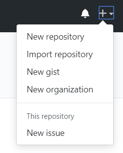
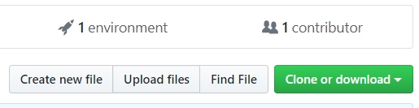
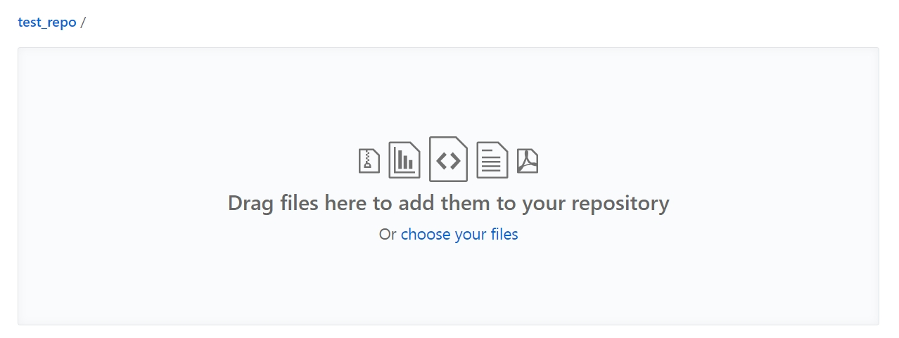
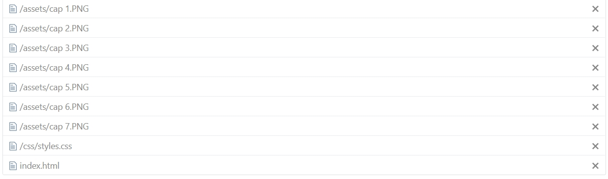
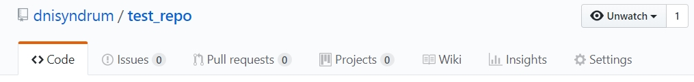
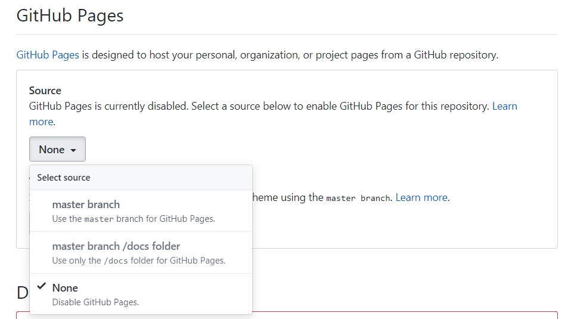
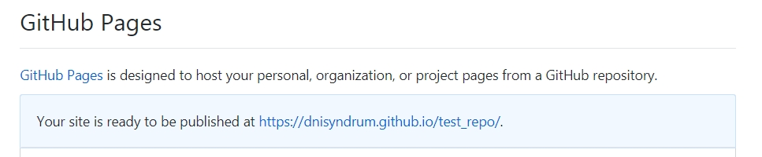

Click the '+' at the top right of the Github webpage and select "New repository."
Enter a name for your new repository and check the box next to "Initialize this repository with a README." Then click "Create repository."
Click the "Upload files" button to add files to your repository.
Drag and drop your entire file structure into the window. Make sure that this includes your index.html file, assets folder, and css folder. Do not drag a single folding into the window containing everything.
 Once the new repository is set up, click the "settings" tab.
Scroll down to the "Github pages" section and click the drop down menu under "Source." Select the first option that reads "Master branch."
Scroll back down to the same location. The link to your new webpage will be shown.
